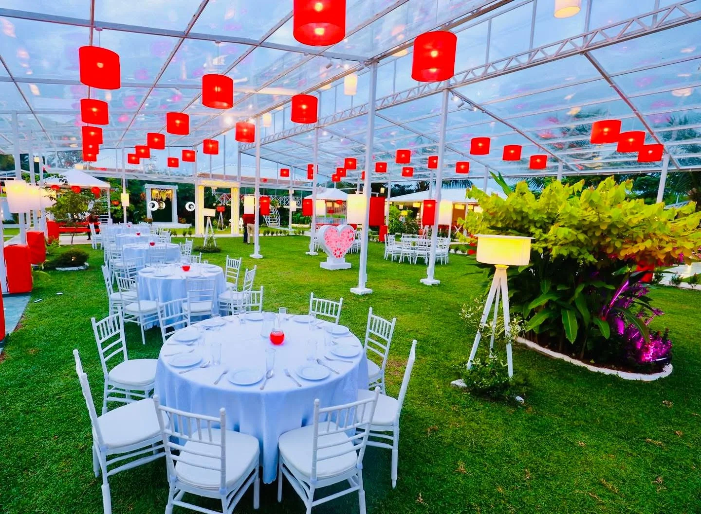
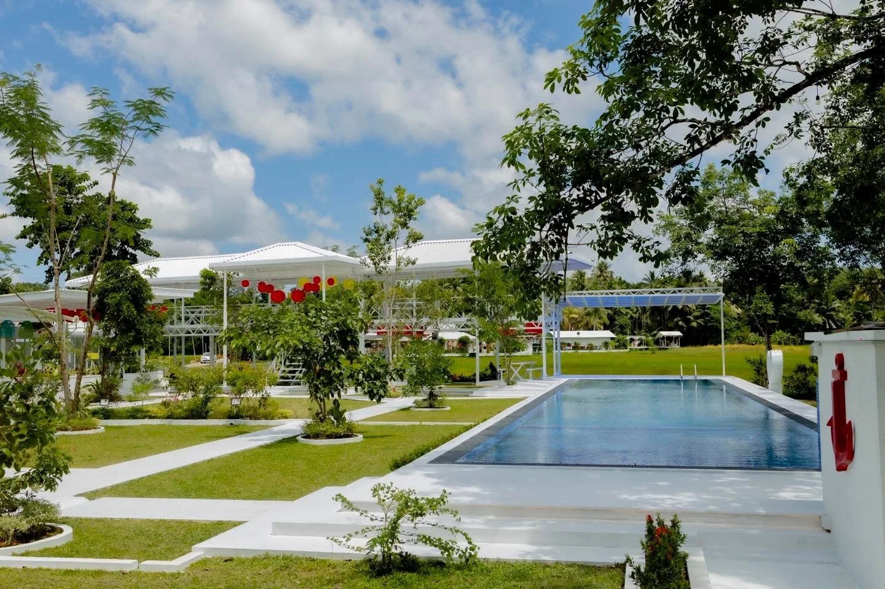
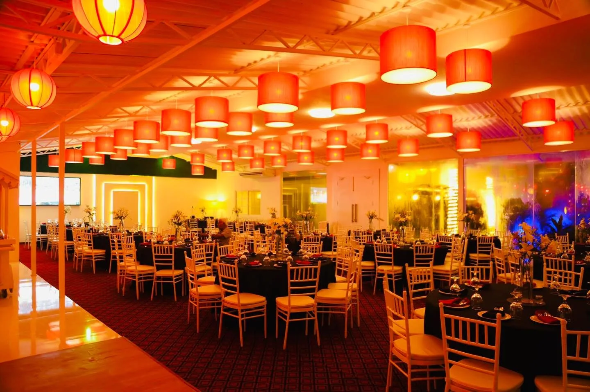
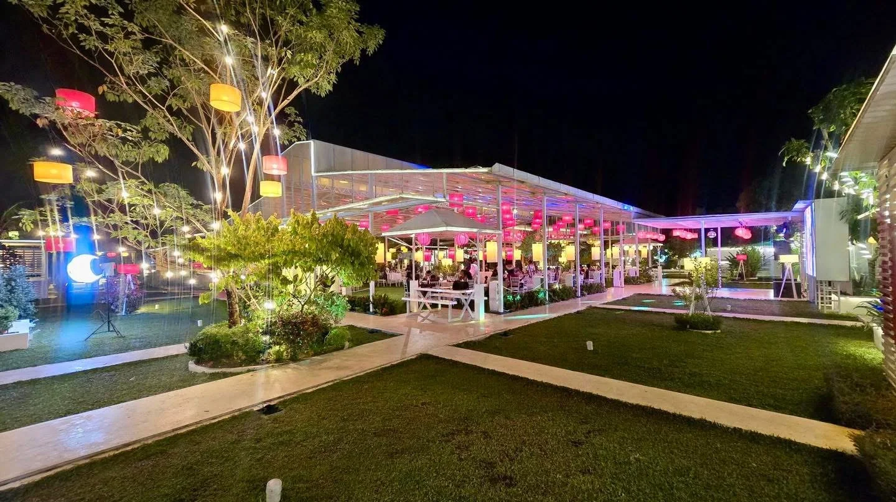
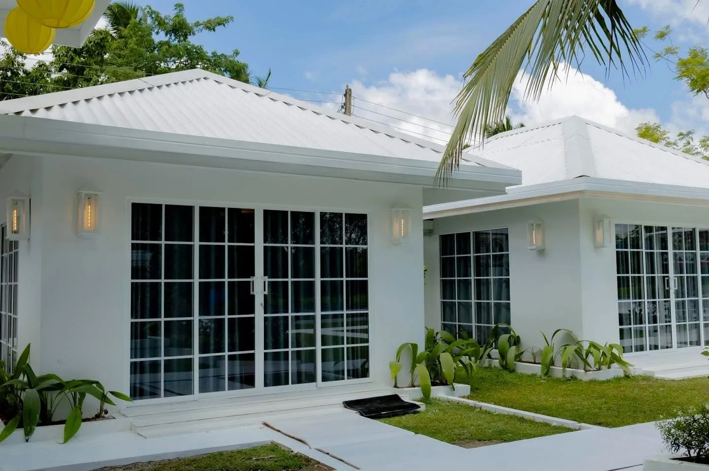
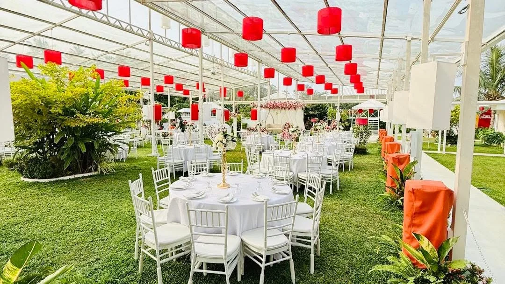
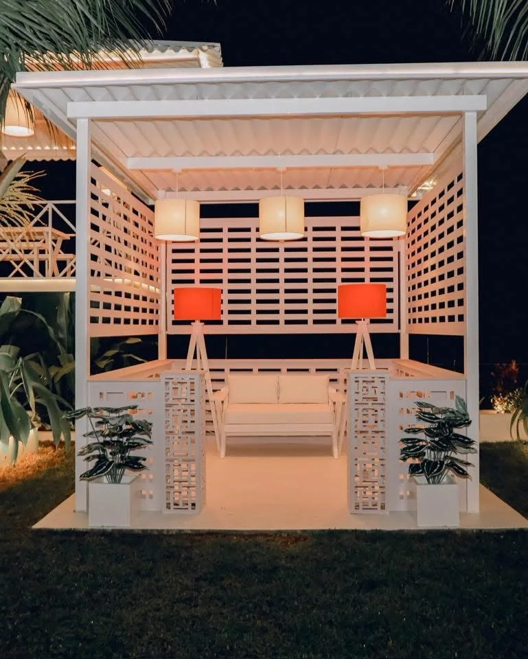

Celebrations
Weddings, birthdays and special gatherings.




DINING • STAYS • CELEBRATIONS
An elegant venue in Alupathwila for dining, stays, private events and unforgettable celebrations, surrounded by lush gardens and serene natural beauty.
A Techno Group hospitality destination
Alupathwila, Sri Lanka
Weddings, birthdays and special gatherings.
A refreshing pool and relaxing outdoor spaces.
Cottage-style stays close to nature.
Elegant, intimate spaces for your occasions.
Good food in a beautiful garden setting.
GRAND TECHNO · ALUPATHWILA
Hospitality, nature and celebration come together at Grand Techno.
Part of Techno Group, Grand Techno brings a different dimension to our family of businesses: a garden destination for dining, leisure, celebrations and peaceful stays. From an intimate meal to a gathering of family, friends or colleagues, the venue offers spaces for sharing time together in Alupathwila.
CELEBRATIONS
From dream weddings to birthdays, private events and corporate gatherings — host your special moments in an elegant and memorable setting.

STAYS & LEISURE
Unwind in our comfortable cottages, enjoy a refreshing swim, or simply relax in our beautifully landscaped gardens.

DINING & TOGETHERNESS
Share a meal in a setting where tropical greenery, open garden views and warm lighting are part of the experience. Grand Techno’s dining spaces bring people together for relaxed family meals and special occasions alike.
Garden dining · Family meals · Shared occasions

PRIVATE PAVILIONS
Set among the gardens, our private pavilions offer an intimate backdrop for smaller gatherings and unhurried conversations. As evening arrives, soft lights and the surrounding greenery give these spaces a character of their own.
Intimate settings · Garden surroundings · Evening ambience
POOLSIDE & GARDENS
A refreshing pool, landscaped lawns and leafy garden corners invite a slower pace. Spend time by the water, enjoy the tropical surroundings, or make a leisurely day of being together away from the everyday routine.
Swimming pool · Landscaped gardens · Outdoor leisure
OUR VENUE
Gardens, gatherings and the little details.
FIND US IN ALUPATHWILA
For opening hours, availability, dining enquiries, stays or event arrangements, please contact the Grand Techno team.
Grand Techno Alupathwila
Alupathwila, Sri Lanka